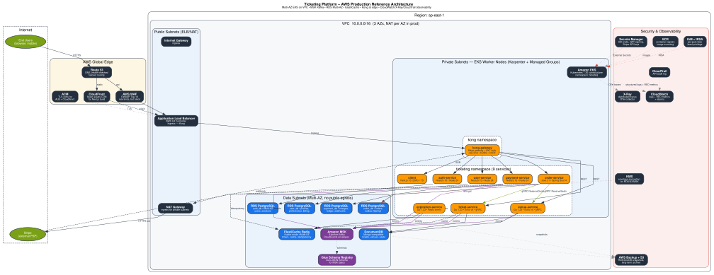

AWS Infrastructure
Reference production architecture — EKS, MSK, RDS Multi-AZ, ElastiCache, Kong gateway, IRSA, CloudWatch observability.
Source: 01-aws-infrastructure.py (Graphviz)

Reference production architecture — EKS, MSK, RDS Multi-AZ, ElastiCache, Kong gateway, IRSA, CloudWatch observability.
Source: 01-aws-infrastructure.py (Graphviz)
